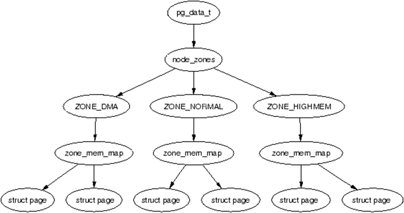

11.1 Nodes and Zones
The architectural concepts of nodes and zones were introduced in Chapter 8. Within a Non-Uniform Memory Access (NUMA) topology, physical memory is partitioned into multiple distinct nodes. Each individual node can be structurally segmented into several zones of varying types (see §8.8.1), and each zone can be further categorized into a sequence of granular pages. A node is represented by the struct pglist_data (pg_data_t) structure, a zone is represented by the struct zone structure, and an individual page is represented by the struct page structure. The hierarchical relationship among nodes, zones, and pages is illustrated in the figure below:

Figure 11-1 Hierarchical Relationship among Nodes, Zones, and Pages
The primary fields of the pglist_data structure, which describes a memory node, were outlined briefly in §8.1.1. Leveraging either the node_zonelists[0] pointer or the node_zones array embedded within this structure allows the system to access all architectural zones belonging to that specific node. Several highly critical fields within struct zone that are routinely utilized include zone_start_pfn, zone_end_pfn, node, zone_pgdat, _watermark, spanned_pages, managed_pages, present_pages, and free_area. Among these, zone_start_pfn and zone_end_pfn designate the starting and ending Page Frame Numbers (PFNs) encompassing the targeted zone, respectively. The node field identifies the numerical index of the node hosting this zone. The zone_pgdat pointer references the parent pglist_data structure of the node to which this specific zone belongs.
The _watermark array is utilized to track the residual free memory constraints within the zone. This array comprises three discrete watermark indexes: WMARK_MIN, WMARK_LOW, and WMARK_HIGH. The memory allocation subsystem leverages these three explicit thresholds to orchestrate memory allocation and reclamation constraints. When the number of available free pages drops below _watermark[WMARK_LOW], the asynchronous memory management background daemon (kswapd) is activated to scan for and reclaim pages that can be safely evicted. Conversely, when the number of available free pages rises above _watermark[WMARK_HIGH], the memory reclamation task enters a low-power sleep state. The operating system enforces a strict runtime constraint dictating that the volume of available free pages must not drop below the threshold configured at _watermark[WMARK_LOW].
spanned_pages represents the aggregate span of pages covered by the zone from its lowest to highest PFN. present_pages denotes the actual volume of physical memory present within the zone, which mathematically evaluates to the total spanned pages minus any memory holes (non-existent physical pages). managed_pages signifies the total pool of pages actively managed by the buddy memory allocation system, which equals the present pages minus any platform-reserved pages. free_area is an array of free_area structures tracking all free memory chunks within the zone. Following predefined memory allocation granularities, Linux partitions this free space into distinct tracking arrays scaling by orders of 1 page, 2 pages, 4 pages, up to $2^{11}$ pages. For instance, the region tracked by free_area[0] is utilized to allocate chunks of a 1-page magnitude, whereas free_area[11] is utilized to allocate continuous memory chunks of a $2^{11}$-page magnitude.
Following system boot, continuous runtime allocation and deallocation operations inevitably cause physical memory to become highly fragmented into non-contiguous, small-sized address spaces—a phenomenon designated as memory fragmentation. Certain high-performance application scenarios mandate physically contiguous memory blocks; therefore, it is imperative to consolidate heavily fragmented memory blocks back into larger, continuous address spaces. The structural process of consolidating fragmented memory chunks into physically contiguous zones is designated as memory compaction. This operation relies on page migration mechanisms, which physically relocate the raw data contents of pages from one tracking block to another. To facilitate this, the struct zone structure declares specialized variables related to memory compaction tracking, such as compact_init_migrate_pfn.
To record the operational status of individual nodes, Linux defines a global bitmask array designated as node_states. This tracking subsystem preserves seven distinct sets of bitmasks: N_POSSIBLE, N_ONLINE, N_NORMAL_MEMORY, N_HIGH_MEMORY, N_MEMORY, N_CPU, and N_GENERIC_INITIATOR. Each individual bit within these masks maps explicitly to a unique node index. If a specific bit within a tracking mask is set to 1, it indicates that the corresponding node currently satisfies the operational criteria of that mask. The underlying meaning of each mask category can be inferred directly from its name; for instance, the node_states[N_ONLINE] mask logs all nodes that are currently online, while node_states[N_NORMAL_MEMORY] tracks nodes that contain a valid ZONE_NORMAL memory region. The concrete programmatic definitions can be reviewed inside the header file git/include/linux/nodemask.h.
A page represents the fundamental tracking block for physical memory management, and the Memory Management Unit (MMU) interfaces with physical memory via translation page tables. In the virtual address space, the Linux buddy memory management framework handles physical allocation via the page structure (the physical page descriptor). The struct page structure is declared within the file git/include/linux/mm_types.h. Although the hardware dimensions of memory pages remain identical—typically evaluating to 4096 bytes—the concrete definition of struct page changes dynamically depending on the active execution context. For instance, the definition of a page structure utilized within the SLOB allocator varies from one utilized within the SLAB allocator, and the definition utilized within the core buddy allocator diverges from both the SLOB and SLAB tracking formats. These architectural variances are achieved programmatically via nested C language constructs known as unions. The specific definitions regarding distinct page variations are outlined across subsequent sections.
To prevent multiple CPU cores from contending for global locks when frequently allocating and freeing individual memory pages (Order-0 pages), the kernel establishes localized memory caches for each individual CPU core. This specific category of localized memory cache is described by the Per-CPU Pages (PCP) mechanism via the per_cpu_pages structure.
During the early stages of kernel boot before the full dynamic memory allocation infrastructure is active, Linux defines a temporary buffer array designated as the boot_pageset of the PCP type. This provides uniform memory allocation code paths and serves as the underlying structural support for single-page (Order-0) allocations. The operations of the memory management framework are tightly bound to the specific CPU utilizing that memory. The definition of the tracking structure struct per_cpu_pageset is as follows:
struct per_cpu_pageset {
struct per_cpu_pages pcp;
#ifdef CONFIG_NUMA
s8 expire;
u16 vm_numa_stat_diff[NR_VM_NUMA_STAT_ITEMS];
#endif
#ifdef CONFIG_SMP
s8 stat_threshold;
s8 vm_stat_diff[NR_VM_ZONE_STAT_ITEMS];
#endif
}
The per_cpu_pageset structure incorporates the per_cpu_pages structure, which is defined as follows:
struct per_cpu_pages {
int count;
int high;
int batch;
struct list_head lists[MIGRATE_PCPTYPES];
};
The count variable denotes the number of memory pages that the CPU can currently release. The high field is utilized to configure the threshold for batch memory reclamation; memory pages are released only when the number of reclaimable pages exceeds this threshold value. batch signifies the number of pages sequentially added or freed by this specific CPU during a single batch operation within the memory management subsystem. lists is an array of linked list heads, where the linked lists are used to preserve the memory pages (Order-0 pages) that can be directly utilized by the CPU without contending for global locks. Depending on the migration types of the memory pages, pages are preserved within distinct linked lists respectively. It can be observed from this setup that the directly usable memory pages are all migration-ready pages, which encompasses MIGRATE_UNMOVABLE, MIGRATE_MOVABLE, and MIGRATE_RECLAIMABLE. (In the latest version of Linux, the definition of the PCP list has been revised to struct list_head lists[MIGRATE_PCPTYPES][NR_PCP_LISTS]. After upgrading to a two-dimensional array, the introduction of NR_PCP_LISTS allows the system to preserve not only Order-0 memory pages but also higher-order free physical pages of continuous blocks of 2, 4, or 8 pages, thereby enabling small-amount, multi-page allocations to benefit from the extreme performance of lockless access).
To ensure the normal operation of the memory management subsystem, the initialization of the pglist_data, zone, and page structures must be executed during the boot phase. The initialization of pglist_data commences immediately following the termination of the previously described paging_init() procedure. In this chapter, we will outline the initialization process of the zone structures and the page allocation subsystem.